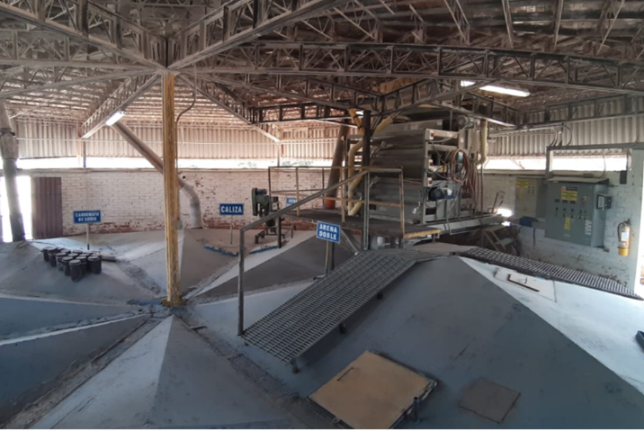
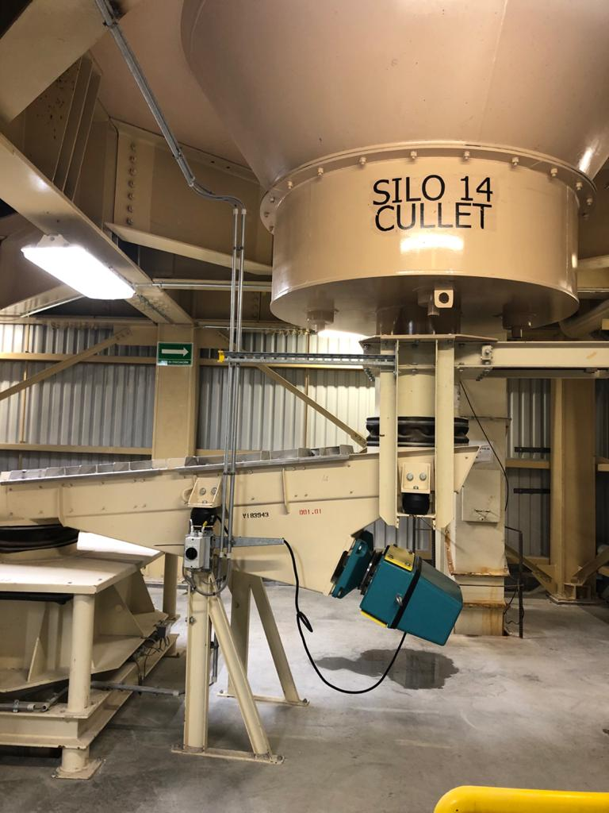
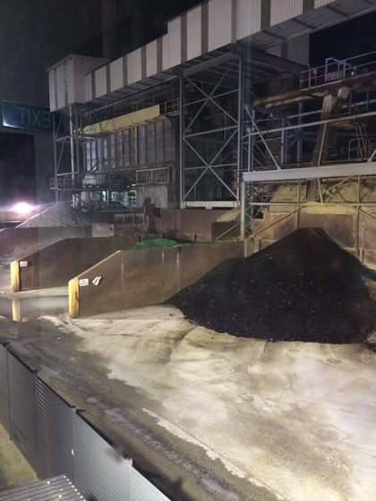
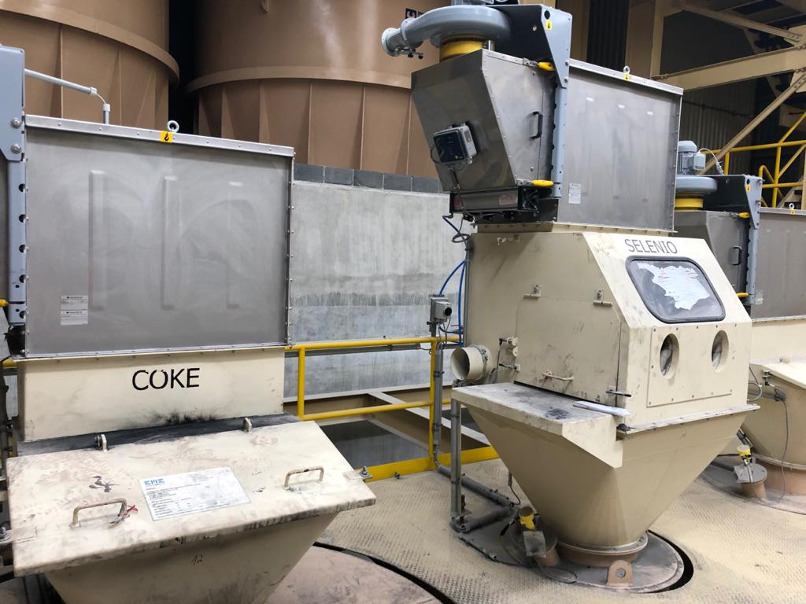

Batch House Housekeeping
Purpose
To define a procedure that applies to all plants for housekeeping in the Batch House and related areas.
Reference
- BAT-02-003Batch House Environmental, Health and Safety
- BAT-02-010Batch House Personnel Training
Document Classification
- Asset Protection and Stability
- Safety and Environment
Fundamentals
- FUR-600
Procedure
- Good housekeeping practices and techniques can be broken down into 5 different themes.
- Keep the Workplace Clean and Tidy
- It is the responsibility of all who work or have business in the Batch House to maintain a clean and safe work environment and notify the appropriate personnel of damaged or problem equipment.
- Watch Floor Surfaces
- Regular inspection for hazards such as floor deterioration, material accumulation and water or oil buildup.
- Wear the proper footwear as defined in Procedure BAT-02-003 Batch House Environmental, Health and Safety.
- Check Storage Areas
- Regularly clear out storage areas to confirm equipment is still in good working order and is accounted for. Discard broken equipment or expired materials.
- Ensure heavy objects are not stored overhead, or if overhead storage is
required, the objects are secured in place.

- Keep Up with Maintenance
- The Batch House is full of machines and equipment requiring regular maintenance.
- Keep maintenance logs that include, but are not limited to:
- Install date, service performed, service dates.
- Stay Vigilant
- When everyone does their part to keep housekeeping in mind, mechanics will be more willing to perform preventative maintenance on equipment that will reduce unexpected down time. Also crew members will be more encouraged to clean small messes when they occur instead of allowing them to turn into large messes.
- Take special care to watch new employees and contractors who are not familiar with the Batch House to ensure they understand the appropriate safety procedures and good housekeeping behaviors.
- Keep the Workplace Clean and Tidy
- It the responsibility of all employees working within the Batch House including contractors to maintain a clean and safe work environment at all times.
- All Batch House personnel shall follow the directives in Procedure BAT-02-003 Batch House Environmental, Health and Safety when performing housekeeping tasks.
- Batch House personnel shall be trained in housekeeping tasks according to BAT-02-010 Batch House Personnel Training.
- Housekeeping and cleaning tasks, responsibilities and techniques will vary by plant and in accordance to local, state and governmental regulations. Housekeeping routines shall include, but not be limited to, the following areas:
- Top of batch house. 
- Batch house basement.
- Mixer floor and scales floor. 

- Dumpster area and entire Batch and Furnace yard area outside.
- All belt conveyors.

- Platforms surrounding all conveyors and elevators.

- Major and minor scale discharge chutes.

- Hot and cold cullet returns.


- Yard around the Batch House.

- Truck unloading area.

- Rail unloading area.
- Areas surrounding external cullet bunkers.
- External cullet building and expanded metal floor.
- Minor raw materials mixing and storage.


- Scale area and entire recycling center.
- Top of batch house.
- If cleaning in the Batch House or unloading area presents a risk of contaminating the batch, cullet, or mixed batch and cullet, the affected material shall be rejected and disposed of properly.
- Personnel shall maintain work benches and other work areas in a neat and orderly manner.
- Batch House personnel shall follow the Lean 5S process and method for creating and maintaining an organized, clean, and safe high-performance workplace: sort, set in order (simplify), shine (sweep), standardize, and sustain (self-discipline).
- Space Plant Health and Safety representatives shall be responsible for informing and obtaining agreements with any cleaning contractor personnel.
- Plant leadership shall review electronic and electrical equipment with the individual(s) or contractor(s) actually doing the cleaning and instruct them regarding the proper cleaning procedures.
- Do NOT be satisfied with damaged, broken or unsafe equipment/work areas. The examples above show that Batch Houses can look amazing and perform just as well. With vigilance, care and accountability it is possible. Reach out to your subject matter experts with any questions or concerns.
Approval
Sanctioning Representatives of the Global Team
|
Region/Discipline |
Representative |
|---|---|
|
Furnace Operations |
John Collins |
|
Plant Systems |
Richard Albanese |
|
Mechanical Systems |
Andrew Tracey |
|
Glass Science |
Monica Pacheco |
|
Global Operations |
Chris Brenna |
Revision History
| 2020-08-23 |
Approved by Chris Brenna, Batch House Fundamentals Lead Original Issue |